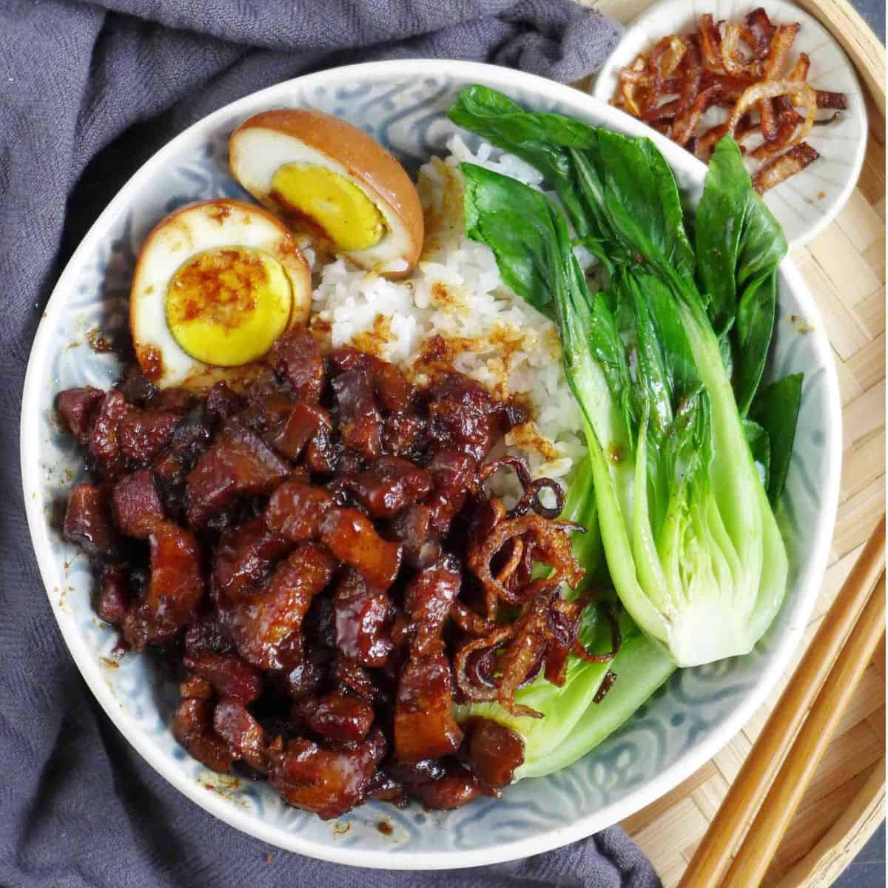

Taiwanese Braised Pork

Juicy chopped pork accompanied by a boiled egg and bok choy!
Taiwanese braised pork has got to be one of the best dishes man kind has ever made period. The sweet and savory flavors
you get from slow cooking the pork is unbeatable. I was born and raised in Manila, Phillipines so you know us filipinos have some
really good food.
Although this recipe takes a long time to complete, making Taiwanese braised pork does not require a lot of ingredients to begin with
the steps on creating this juicy meal is quite simple.
Ingredients
- 1 lb skin on pork belly
- 2 tsp oil
- 1 oz rock sugar
- 1 small onion
- 1/4 cup shaoxing wine
- 3 tbsp light soy sause
- 2 tbsp dark soy sause
- 2 cups water
- 4 hard boiled eggs
- 3 star anise
- 1 cinnamon stick
- 6 cloves
- 3 bay leaves
- 2 tsp sichuan peppercorns
- 2 slices fresh ginger
steps
- Bring a medium pot of water to a boil (just enough
so that the pork will be fully submerged), and blanch
the chopped pork belly for 1 minute. Drain, rinse
clean of any scum, and set aside.
- Heat the oil in a wok over low heat, and add the sugar.
Cook the sugar until it starts to melt and then add the
onions. Turn up the heat to medium high and stir-fry
the onions for a minute. Add the mushrooms and stir-fry
for another couple minutes.
- Add the blanched pork, shaoxing wine, light soy sauce,
dark soy sauce and water. Stir and bring the mixture to
a boil. Once boiling, add the spices (which should be
tied in cheese cloth), along with the peeled hardboiled
eggs and turn the heat to the lowest setting. Simmer for
1 1/2 hours, stirring occasionally to prevent sticking.
- At this point the meat should be fall-apart tender.
To finish the dish, remove the spice packet and turn up
the heat to medium high to thicken the sauce, stirring
occasionally. This process should take about 5-minutes.
The sauce should be thick enough to coat a spoon, but
there should still be plenty of it left. Serve over
steame